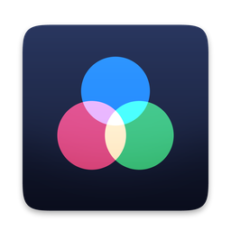

Gruppen
Zufällige Gruppen für die nächste Stunde – fair verteilt, mit Blick darauf, wer heute fehlt und wer schon oft zusammen war.
Klassen in Sekunden
Namensliste einfügen oder Tabelle importieren – Kopfzeilen werden erkannt und ignoriert.
Wie Sie es brauchen
Nach Gruppengröße oder Anzahl der Gruppen; übrige Schüler dazusetzen oder kleinere Gruppen bilden.
Fair gemischt
Mädchen und Jungen gleichmäßig verteilen, möglichst neue Kombinationen dank Verlauf.
Wer ist heute da?
Fehlende antippen – sie werden bei der Einteilung übersprungen. Längere Abwesenheiten lassen sich vermerken.
Für den Beamer
Große Vollbild-Ansicht für die Klasse oder die Gruppen als Text kopieren.
Sicher gespeichert
Alles bleibt auf dem Mac, verschlüsselt gespeichert. Sicherungen optional mit Kennwort. Oberfläche auf Deutsch, Englisch und Italienisch.
- Zip-Datei öffnen – per Doppelklick wird die App entpackt.
- In „Programme“ ziehen – die App aus dem Download-Ordner in den Ordner Programme verschieben.
- Erstes Öffnen erlauben – macOS kennt die App noch nicht und fragt nach. Unter macOS 15 und neuer: App einmal öffnen, dann Systemeinstellungen → Datenschutz & Sicherheit → ganz unten „Trotzdem öffnen“. Unter älteren Versionen genügt Rechtsklick → „Öffnen“.
- Version
- 1.0
- System
- macOS 14+
- Prozessor
- Apple-Chip & Intel
- Preis
- Kostenlos
Kostenlos – und das soll so bleiben.
Alle Apps sind für Lehrkräfte frei nutzbar. Wenn sie Ihnen im Schulalltag Zeit sparen, freue ich mich über einen Kaffee. Freiwillig, ohne Gegenleistung, ohne Konto.
Die Spende läuft über einen externen Anbieter; erst beim Klick verlassen Sie diese Seite.
Von einer Lehrkraft, für Lehrkräfte.
Ich bin Julian Theis und unterrichte Englisch und Italienisch an einem Gymnasium in München. Die Apps entstehen aus konkreten Problemen im eigenen Schulalltag – oder weil Kolleginnen und Kollegen gefragt haben, ob es dafür nicht etwas Einfacheres gäbe.
Konzipiert, fachlich geprüft und im Unterricht getestet von mir; programmiert mit Unterstützung von KI (Claude von Anthropic).
Fragen, Fehler, Ideen? theis@ovmg.de